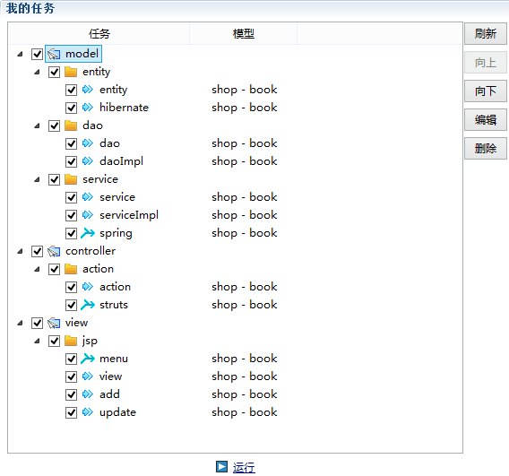
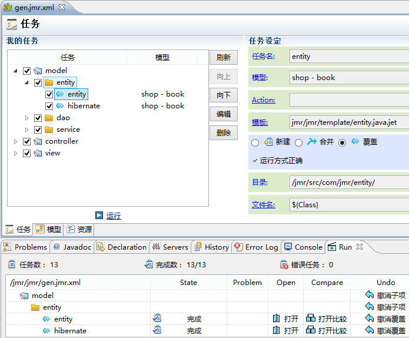

Jmr如何运用到实际开发，如何给大家带来效率的提升和真实的价值，这才是大家最关心的。接下来通过一个实际Java Web项目来说明。
以下是一个Java Web的例子，根据数据库的表，转换模型，生成一个完整的增删查改模块，概括起来有4步：
1、编写模板
2、设置任务
3、设置模型（数据库）
4、运行生成
小伙伴们可以根据自己的项目和框架，把那些有规律重复的部分写成Jmr的模板，不管多复杂的前后台代码，只要有规律可循都可以实现自动化。设定好任务，设置好模型的规则，用好Jmr，能大大提高工作效率。
1）编写模板：包括entity（实体类），dao，service，action；在hibernate中添加映射，在spring中注册bean，在struts中注册action；增删查改的jsp前台界面。当然，小伙伴也可以根据自己使用的框架来写对应的模板，使用Jmr都可以很容易做到，此处只是拿ssh框架做例子。
2）设置好对应的任务。
根据要生成的文件设置任务。

3）生成模型：读取数据库中的新表，生成模型。我们使用预设方案，自定义新属性，减少我们修改模型的工作量。
4）修改模型：由于每个项目都有自己的特性，根据自己项目的规则，可以修改或者新增一些特性，作为参数传给模板，满足不同项目的生成需求。
增加了3个属性：
增加了3个列：
5）为任务配置新的模型
6）选中刚刚新建模型的组。
7）运行任务。

8）生成的新功能，完整的增删查改。
查询页面：

新增页面：
修改页面：